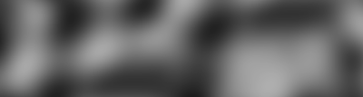

Mobile Game
 Mobile development has always been a strong interest of mine. Even just building applications for mobile is exciting to me,
let alone all the possibilities the form factor gives rise to. Coupled with my interest in procedural generation and computer
graphics I felt I could create a nice mobile experience.
Mobile development has always been a strong interest of mine. Even just building applications for mobile is exciting to me,
let alone all the possibilities the form factor gives rise to. Coupled with my interest in procedural generation and computer
graphics I felt I could create a nice mobile experience.
I have worked on prototypes in the past involving procedural terrain generation. One main project focused on the the creation of
of a tile based world and the optimization of related meshes. This generated terrain worked with tile-based AI systems and combat
mechanics. You can see more in another post on my site.
I knew I wanted to go simplistic from the start, and with my recent passion in HLSL I wanted to leverage the GPU in every
way I possibly could. I also discovered this "layered" terrain style and wanted to make that an integral part of the game's visuals.
When generating terrain we compile multiple layers of coherent noise of varying frequencies into a texture. Texture reading/writing is generally
very fast for this use case, and GPU processes excel with texture lookups. You can see above how a texture would translate into
3D terrain within the game world.
There are three core categories at play to achieve a not only procedural landscapes, but also this specific look:
-
1) Procedural Generation Techniques and SIMD Operations
 There are numerous ways to generate coherent noise out there. Among them are some very popular methods like Perlin noise. Perlin noise is an n-dimensional function that defines a grid of normal pseudorandom gradient vectors to be interpolated between for a final result (which you can see here). Other methods like Simplex build on these concepts and further enhance the available parameters and options available! (also see Voronoi Noise)
With these methods in mind we can move to an implementation. The core method of optimization was the utilization of Single Instruction Multiple Data (SIMD) operations on the GPU. With this method we can define our desired vector operations and construct a Wavefront (AMD) (or a Warp (NVIDIA)) that performs numerous parallel operations in lockstep within the GPU. This link has some very valuable terminology. -
2) Clipping and Stencil Buffers
For this effect in particular a lot of selective clipping is use to achieve the stylized look. Each terrain "layer" consists of a single plane containing two triangles, and the shaders must perform a clip on a fragment level based on both real-time texture input and world position. All parameters are handed to the shader and it chooses whether to keep or remove the fragment.
 Another important effect is the use of stencils. Stencils usually come in the form of a camera mask containing
an 8 bit integer per pixel that stores the appropriate stencil value of the object under the pixel. This stencil
process is very similar to the more common depth buffer calculations used in shaders. We can perform
simple boolean operations on stencil values to determine if we need to clip the pixel or not. These affects are very commonly
used for portals and other "doorways" that seem to defy reality. In my case we can see the affect in action
when the player opens their inventory.
Another important effect is the use of stencils. Stencils usually come in the form of a camera mask containing
an 8 bit integer per pixel that stores the appropriate stencil value of the object under the pixel. This stencil
process is very similar to the more common depth buffer calculations used in shaders. We can perform
simple boolean operations on stencil values to determine if we need to clip the pixel or not. These affects are very commonly
used for portals and other "doorways" that seem to defy reality. In my case we can see the affect in action
when the player opens their inventory.
There are many more small uses of fragment shaders throughout the game, and this leads to the last point. -
3) Correct Texture Formatting and Other Considerations
When converting from a texture format to a strictly numerical representation of terrain, we have a lot of tools at our disposal. Most notably we can see that the terrain present in the game appears mostly smooth even though the texture data is only at a minuscule resolution (64x64 pixels). This smoothness arises from texture sample and the inherit bilinear and trilinear filtering modes present in the chosen texture format itself (usually compressed 24 bit RGB color).
 Finally, it must be noted that stencils and clipping (as mentioned above) must be used on every
shader in the game. Meaning every shader has to be modified or re-written to accommodate for these
specific needs. Birds, balloons, houses, decorations, wind indicators, etc must all have custom
shaders applied.
Finally, it must be noted that stencils and clipping (as mentioned above) must be used on every
shader in the game. Meaning every shader has to be modified or re-written to accommodate for these
specific needs. Birds, balloons, houses, decorations, wind indicators, etc must all have custom
shaders applied.
This was a simple overview of the affects and work I put into the visual style of this mobile game
I am working on. There are many more concepts and techniques that go into a game like this, but those fall
under a more general game mechanic umbrella, and I should have a post about it up soon.
I plan to release this game to the public early 2021.